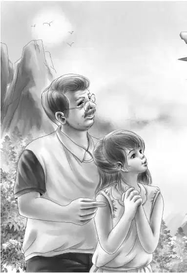
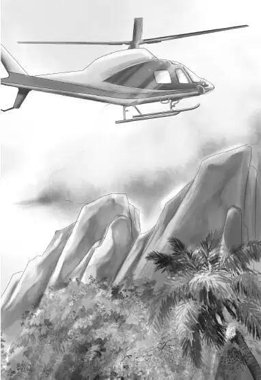

When Henry awoke he thought even before he opened his eyes，“The helicopter will come at sunrise.” Then he opened his eyes and blinked.
The whole mountain top was covered with thick fog. Henry turned his head to look at Jessie. She was close enough to touch，but he could hardly see her.
Benny called，“I’m awake，Henry. Foggy，isn’t it？”
Henry propped himself up on one elbow.“I wonder if it is often foggy like this in the morning. I guess when we’re not up so high we don’t pay any real attention.”
Grandfather said，“The mountain top is always covered with fog in the early morning. That’s why campers don’t stay here overnight. But the fog will soon go away.”
Henry said，“One thing is sure. We must stay close together every minute.”
Everyone understood what Henry meant. It would be dangerous to move about too much and perhaps come close to the edge of the rocky，flat top without knowing it.
They all sat up.
“Where is that paper bag of scraps？” asked Benny. “Now I’m hungry.”
“I have it，” said Jessie.“I also have some napkins. Put your hands out and take a napkin，and I will try to divide the breakfast.”
She broke the big hamburger into five pieces. Then she got out of her sleeping bag and went down the line putting scraps of roll and one whole roll on each napkin. She gave Mr. Alden his cold coffee. There were four cups on the top of the thermos bottle.
“Tell me when you want a drink of water，” she said.“We mustn’t waste a drop.”
Violet was on one end of the row，and Henry was on the other. They could not see each other because of the fog，but they could hear very well.
Everyone started to eat breakfast. Violet said，“I wouldn’t think bread crusts could taste so delicious.”
Grandfather said with a laugh，“Nor cold coffee mixed with Coke.”
Benny said，“After this，you’ll have to put Coke in your coffee instead of sugar.”
Henry said，“I certainly hope the fog will lift before lunchtime because we haven’t a crumb of food left.”
Henry had no sooner said this than the fog lifted. Like magic it entirely disappeared.
“That’s the way fog does，” said Henry.“And don’t forget it can shut down just as fast. Maybe it will come back.”
“You’re the gloomy one，” Jessie said，but she laughed.
“Well，” said Mr. Alden，“I don’t think it will this time. Look at that sun！”
The whole valley was golden in the bright sunshine. There was not a cloud in the sky.
“Maybe we ought to get ready for the helicopter，” said Violet.“We don’t want to keep them waiting.”
They got their packs ready，rolled up the sleeping bags，and waited.
“Remember when that big rock fell？” said Benny. “I think I really saw a hole，a huge one. Like a cave maybe.”
Grandfather said，“You may be sure we will find out. Ah！Here comes the helicopter.”
“I guess they know the fog has gone away，” said Jessie.
The Aldens saw the helicopter whirring far above them and then slowly coming down. Without a word they all stood behind the hump. This left an open place for the helicopter to land. It came straight down and landed exactly in the middle of the space.
“Straight as a string，” said Benny.“Oh，look who’s here！It’s Mr. Carter！”
Violet cried，“Now where in the world did he come from？”
Grandfather smiled.
“Really，”said Jessie，“how did he know about us， Grandfather？”
“That will be a good puzzle for you to guess，” said Mr. Alden.
“Pooh！” said Benny.“I bet I can tell you exactly what happened. I’ll bet you told the ranger to send for Mr. Carter right away if anything happened.”


By this time Mr. Carter and a ranger had let down the steps and were coming down.
“We can’t take you all at once，” the ranger pilot said.
“Well，then，leave me for the second trip，” said Mr. Alden.
“And I will stay with you，Grandfather，” said Violet.
“Good girl，” Mr. Alden said.
Henry，Jessie，and Benny took their packs and poles and sleeping bags. John Carter helped them up the steps into the helicopter.
“We’ll be back soon，” he said，pulling in the steps.
Sure enough，in a short time the helicopter was back for Grandfather and Violet.
Grandfather asked the pilot to hover over Old Flat Top. There was the hole that Benny thought he saw when the step fell.
“Look，Violet，there’s the hole！” shouted Grandfather over the noise of the helicopter.
Down they went to the log store. Even before the plane landed，Violet said，“Grandfather，I see the rangers and some other men，too.”
“Yes，” Grandfather said，“a man with a camera. I have a feeling the newspaper people heard about the rockslide.”
Flashbulbs popped as Mr. Alden and Violet got out of the helicopter. Benny came running up and cried， “Isn’t it exciting？A reporter asked me all about what happened.”
“Mr. Alden？” a man with a notebook said，coming up to Grandfather.“Your grandson has already told me about his accident. The others told me about his rescue and your night on Old Flat Top. May I ask if you plan to stay here longer？”
“The large hole that was opened when the rockslide took place interests me，” Mr. Alden said.“We may stay to learn more.”
Benny was listening hard.“Yes，let’s stay，” he exclaimed.“And you remember that light we saw—”
Before he could say anything more，Mr. Alden told the reporter，“Yes，I think you can say we will be here for a few days. And now we need to get some food. You probably know we had a pretty odd breakfast.”
“Thank you，” the reporter said，“I understand.” He closed his notebook and left with the cameraman.
“Benny，” Mr. Alden said，“I didn’t think that the reporter needed to know about what we saw during the night. Not until we know more about it ourselves.”
A ranger was standing nearby and Henry turned to him.“I have a question，sir. When it was dark，we all saw a very faint light quite deep in the woods. We thought somebody might be in trouble，but the light didn’t move. Do you know anything about this？”
“Yes，we do，” said one of the rangers.“An old Indian lives there，the last of the tribe. Perfectly harmless. Just wants to live alone and be let alone. Every month I take over some flour，salt，sugar，and tea and a few canned things. Then I bring back sweet grass baskets in trade. They sell like hot cakes—I haven’t one left.”
Henry asked，“Could I drive the car as far as the house？”
“No. You can go a little way into the woods. Then you have to walk about a quarter of a mile. The path is easy to follow，” the ranger answered.
Mr. Alden came up. He said，“I think we will drive over. My grandchildren are much interested.”
John Carter said，“I have my car. I can take Benny and Violet.”
Jessie said，“Fine. But we need some lunch. Let’s get some food from the store here and then go.”
Grandfather agreed and let Jessie plan to get what was needed.“We can eat in the woods before we go up the trail，” she said.
The Aldens were soon on their way，Henry driving in the lead. When they had driven as far as they could into the woods，Henry and Mr. Carter parked the cars.
Lunch was quickly eaten because everyone was so curious about the Indian in the woods.
Benny called back，“When we get there，do you think it is all right to knock on the door？”
“I should think so，” said Henry.“What else can we do？We want to go in and meet him，don’t we？The ranger said he was perfectly harmless.”
Soon they saw a small gray house with a large vegetable garden. A stone step was at the front door. Benny knocked.
There was a soft sound of feet and the door opened. There stood a very tall Indian woman who held her head like a queen.
For once Benny did not know what to say. Mr. Alden stepped forward quickly and said，“I hope we are not bothering you. My grandchildren saw your light from Old Flat Top. They were afraid you were in trouble.”
The old Indian woman bowed her head a little， opened the door wide，and said，“Please come in.”